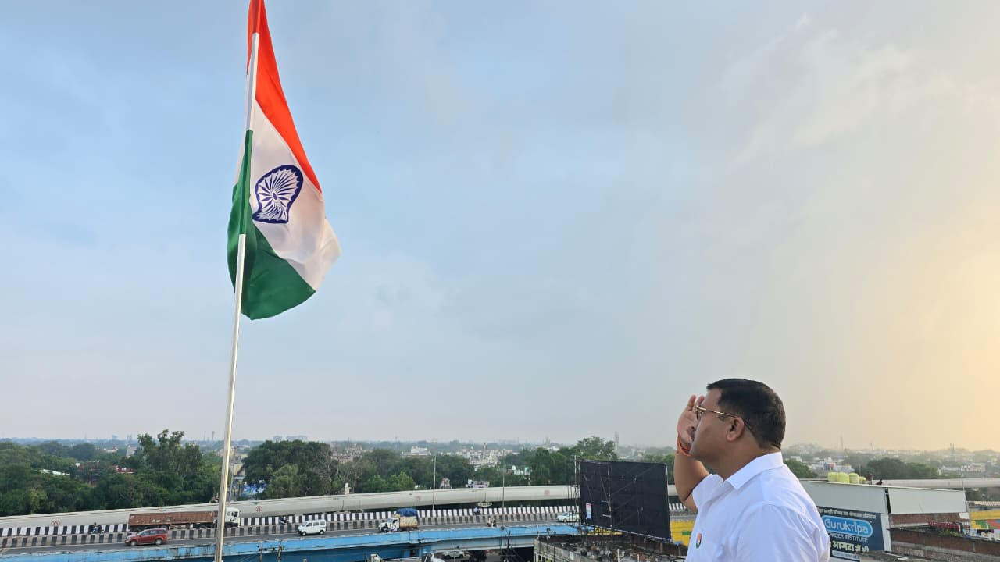

OFFICIAL WEBSITE · राष्ट्र प्रथम
संतोष सिकरवार
जिला उपाध्यक्ष, भारतीय जनता पार्टी, आगरा
"सेवा ही संकल्प, संगठन ही शक्ति"
photo.jpg
परिचय
संतोष सिकरवार भारतीय जनता पार्टी के समर्पित एवं परिश्रमी कार्यकर्ता हैं, जो वर्तमान में जिला उपाध्यक्ष, भारतीय जनता पार्टी, आगरा के रूप में अपना दायित्व निभा रहे हैं। एक सामान्य कार्यकर्ता के रूप में आरंभ कर, वर्षों से संगठन, सेवा और समर्पण के पथ पर निरंतर अग्रसर रहते हुए उन्होंने पार्टी और समाज की निःस्वार्थ सेवा की है।
किसान मोर्चा में जिला उपाध्यक्ष, जिला अध्यक्ष, प्रदेश कार्यसमिति सदस्य एवं ब्रज क्षेत्र के क्षेत्रीय उपाध्यक्ष जैसे अनेक दायित्वों का निर्वहन करते हुए उन्होंने संगठन को ज़मीनी स्तर पर सुदृढ़ करने में महत्वपूर्ण भूमिका निभाई है। किसानों, युवाओं एवं आम जनता के मुद्दों को निरंतर मुखरता से उठाना उनकी कार्यशैली की पहचान रही है।
उनका पूरा राजनीतिक जीवन "राष्ट्र प्रथम, संगठन सर्वोपरि" की भावना को समर्पित रहा है। सेवा को संकल्प और संगठन को शक्ति मानते हुए वे आज भी उसी निष्ठा एवं ऊर्जा के साथ जनसेवा में सक्रिय हैं।
जीवन परिचय
यह संतोष सिकरवार की आधिकारिक व्यक्तिगत वेबसाइट है। (This is the official personal website of Santosh Sikarwar. It is not the official website of the Bharatiya Janata Party.)
राजनीतिक यात्रा
संगठन से समर्पण तक
सार्वजनिक जीवन की शुरुआत
दैनिक यात्री संघ के अध्यक्ष रहते हुए रायभा रेलवे चक्का जाम (15,000 लोग) एवं रायभा से आगरा कमिश्नरी तक पैदल मार्च (3,000 लोग)। वर्ष 2009 में भाजपा की सदस्यता ग्रहण।
सह चुनाव कार्यालय प्रभारी
लोकसभा फतेहपुर सीकरी
संगठन के कार्य
भारतीय जनता पार्टी, आगरा
जिला उपाध्यक्ष
भारतीय जनता पार्टी किसान मोर्चा, आगरा
जिला अध्यक्ष
भारतीय जनता पार्टी किसान मोर्चा, आगरा
प्रदेश कार्यसमिति सदस्य
भारतीय जनता पार्टी किसान मोर्चा, उत्तर प्रदेश
क्षेत्रीय उपाध्यक्ष
भारतीय जनता पार्टी किसान मोर्चा, ब्रज क्षेत्र
जिला उपाध्यक्ष
भारतीय जनता पार्टी, आगरा

फोटो गैलरी
कार्यक्रमों एवं गतिविधियों की झलकियाँ
प्रमुख दायित्व
- सह चुनाव कार्यालय प्रभारी, लोकसभा फतेहपुर सीकरी
- पूर्व जिला उपाध्यक्ष, भाजपा किसान मोर्चा, आगरा
- पूर्व जिला अध्यक्ष, भाजपा किसान मोर्चा, आगरा
- पूर्व प्रदेश कार्यसमिति सदस्य, भाजपा किसान मोर्चा, उत्तर प्रदेश
- पूर्व क्षेत्रीय उपाध्यक्ष, भाजपा किसान मोर्चा, ब्रज क्षेत्र
- वर्तमान जिला उपाध्यक्ष, भारतीय जनता पार्टी, आगरा
संपर्क करें
आपके सुझाव एवं सहयोग का स्वागत है
- ई-मेल: info@santoshsikarwar.in
- फ़ोन: +91 00000 00000
- क्षेत्र: आगरा, उत्तर प्रदेश